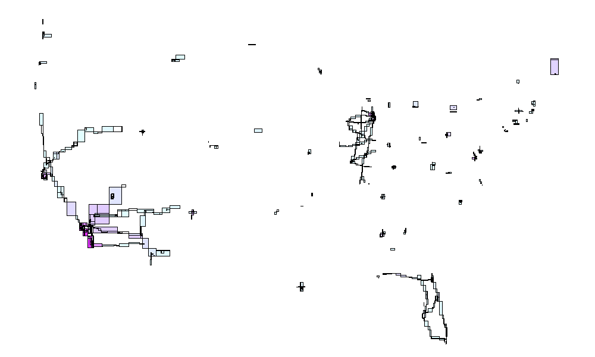

Introduction
apache.sedona is a sparklyr-based R interface for Apache Sedona. It presents what Apache Sedona has to offer through idiomatic frameworks and constructs in R (e.g., one can build spatial Spark SQL queries using Sedona UDFs in conjunction with a wide range of dplyr expressions), hence making Apache Sedona highly friendly for R users.
Generally speaking, when working with Apache Sedona, one choose between the following two modes:
- Manipulating Sedona Spatial Resilient Distributed Datasets with spatial-RDD-related routines
- Querying geometric columns within Spatial DataFrames with Sedona spatial UDFs
While the former option enables more fine-grained control over
low-level implementation details (e.g., which index to build for spatial
queries, which data structure to use for spatial partitioning, etc), the
latter is simpler and leads to a straightforward integration with
dplyr, sparklyr, and other
sparklyr extensions (e.g., one can build ML feature
extractors with Sedona UDFs and connect them with ML pipelines using
ml_*() family of functions in sparklyr,
hence creating ML workflows capable of understanding spatial data).
Because data from spatial RDDs can be imported into Spark DataFrames as geometry columns and vice versa, one can switch between the abovementioned two modes fairly easily.
At the moment apache.sedona consists of the following
components:
- R interface for Spatial-RDD-related functionalities
- Reading/writing spatial data in WKT, WKB, and GeoJSON formats
- Shapefile reader
- Spatial partition, index, join, KNN query, and range query operations
- Visualization routines
-
dplyr-integration for Sedona spatial UDTs and UDFs- See SQL APIs for the list of available UDFs
- Functions importing data from spatial RDDs to Spark DataFrames and vice versa
Connect to Spark
To ensure Sedona serialization routines, UDTs, and UDFs are properly
registered when creating a Spark session, one simply needs to attach
apache.sedona before instantiating a Spark connection.
apache.sedona will take care of the rest. For example,
library(sparklyr)
library(apache.sedona)
spark_home <- "/usr/lib/spark" # NOTE: replace this with your $SPARK_HOME directory
sc <- spark_connect(master = "yarn", spark_home = spark_home)will create a Sedona-capable Spark connection in YARN client mode, and
library(sparklyr)
library(apache.sedona)
sc <- spark_connect(master = "local")will create a Sedona-capable Spark connection to an Apache Spark instance running locally.
In sparklyr, one can easily inspect the Spark connection
object to sanity-check it has been properly initialized with all
Sedona-related dependencies, e.g.,
print(sc$extensions$packages)
#> [1] "org.datasyslab:geotools-wrapper:1.4.0-28.2"
#> [2] "edu.ucar:cdm-core:5.4.2"and
spark_session(sc) %>%
invoke("%>%", list("conf"), list("get", "spark.kryo.registrator")) %>%
print()
#> [1] "org.apache.sedona.viz.core.Serde.SedonaVizKryoRegistrator"For more information about connecting to Spark with
sparklyr, see https://therinspark.com/connections.html and
?sparklyr::spark_connect. Also see Initiate Spark
Context and Initiate Spark
Session for minimum and recommended dependencies for Apache
Sedona.
dplyr workflows
apache.sedona extends sparklyr integrates
with dplyr workflows. See the sparklyr
cheatsheet
Loading data
Copying from R
Data loaded in R can be copied to Spark using copy_to.
Columns containing spatial information can be converted to the geometry
type in Spark DataFrames (GeometryUDT) with Spark SQL functions such as
ST_GeomFromText or ST_GeomFromText, see Vector
constructors and Raster
input and output.
data <- readr::read_tsv("../../binder/data/county_small.tsv", col_names = FALSE, show_col_types = FALSE)
data %>% glimpse()
#> Rows: 100
#> Columns: 18
#> $ X1 <chr> "POLYGON ((-97.019516 42.004097,-97.019519 42.004933,-97.019527 42…
#> $ X2 <chr> "31", "53", "35", "31", "31", "72", "46", "48", "06", "21", "39", …
#> $ X3 <chr> "039", "069", "011", "109", "129", "085", "099", "327", "091", "05…
#> $ X4 <chr> "00835841", "01513275", "00933054", "00835876", "00835886", "01804…
#> $ X5 <chr> "31039", "53069", "35011", "31109", "31129", "72085", "46099", "48…
#> $ X6 <chr> "Cuming", "Wahkiakum", "De Baca", "Lancaster", "Nuckolls", "Las Pi…
#> $ X7 <chr> "Cuming County", "Wahkiakum County", "De Baca County", "Lancaster …
#> $ X8 <chr> "06", "06", "06", "06", "06", "13", "06", "06", "06", "06", "06", …
#> $ X9 <chr> "H1", "H1", "H1", "H1", "H1", "H1", "H1", "H1", "H1", "H1", "H1", …
#> $ X10 <chr> "G4020", "G4020", "G4020", "G4020", "G4020", "G4020", "G4020", "G4…
#> $ X11 <dbl> NA, NA, NA, 339, NA, 490, NA, NA, NA, NA, 248, NA, NA, 108, 338, N…
#> $ X12 <dbl> NA, NA, NA, 30700, NA, 41980, 43620, NA, NA, NA, 22300, 38380, NA,…
#> $ X13 <dbl> NA, NA, NA, NA, NA, NA, NA, NA, NA, NA, NA, NA, NA, NA, NA, NA, NA…
#> $ X14 <chr> "A", "A", "A", "A", "A", "A", "A", "A", "A", "A", "A", "A", "A", "…
#> $ X15 <dbl> 1477895811, 682138871, 6015539696, 2169240202, 1489645187, 8774836…
#> $ X16 <dbl> 10447360, 61658258, 29159492, 22877180, 1718484, 32509, 17349847, …
#> $ X17 <dbl> 41.91587, 46.29464, 34.35927, 40.78355, 40.17649, 18.18715, 43.667…
#> $ X18 <dbl> -96.78852, -123.42446, -104.36870, -96.68866, -98.04684, -65.87119…
data_tbl <- copy_to(sc, data)
data_tbl
#> # Source: spark<data> [?? x 18]
#> X1 X2 X3 X4 X5 X6 X7 X8 X9 X10 X11 X12 X13
#> <chr> <chr> <chr> <chr> <chr> <chr> <chr> <chr> <chr> <chr> <dbl> <dbl> <dbl>
#> 1 POLY… 31 039 0083… 31039 Cumi… Cumi… 06 H1 G4020 NA NA NA
#> 2 POLY… 53 069 0151… 53069 Wahk… Wahk… 06 H1 G4020 NA NA NA
#> 3 POLY… 35 011 0093… 35011 De B… De B… 06 H1 G4020 NA NA NA
#> 4 POLY… 31 109 0083… 31109 Lanc… Lanc… 06 H1 G4020 339 30700 NA
#> 5 POLY… 31 129 0083… 31129 Nuck… Nuck… 06 H1 G4020 NA NA NA
#> 6 POLY… 72 085 0180… 72085 Las … Las … 13 H1 G4020 490 41980 NA
#> 7 POLY… 46 099 0126… 46099 Minn… Minn… 06 H1 G4020 NA 43620 NA
#> 8 POLY… 48 327 0138… 48327 Mena… Mena… 06 H1 G4020 NA NA NA
#> 9 POLY… 06 091 0027… 06091 Sier… Sier… 06 H1 G4020 NA NA NA
#> 10 POLY… 21 053 0051… 21053 Clin… Clin… 06 H1 G4020 NA NA NA
#> # … with more rows, and 5 more variables: X14 <chr>, X15 <dbl>, X16 <dbl>,
#> # X17 <dbl>, X18 <dbl>
data_tbl %>%
transmute(geometry = st_geomfromtext(X1)) %>%
sdf_schema()
#> $geometry
#> $geometry$name
#> [1] "geometry"
#>
#> $geometry$type
#> [1] "GeometryUDT"No automatic translation of sf objects is provided, they need to be converted to text (or binary) format before copying to spark.
data <- sf::st_read("../../binder/data/testPolygon.json")
#> Reading layer `testPolygon' from data source
#> `/Users/gregoireleleu/WORK/MISC_CODE/sedona/binder/data/testPolygon.json'
#> using driver `GeoJSON'
#> Simple feature collection with 1 feature and 10 fields
#> Geometry type: POLYGON
#> Dimension: XY
#> Bounding box: xmin: -87.62176 ymin: 34.83143 xmax: -87.60367 ymax: 34.87344
#> Geodetic CRS: WGS 84
data %>% glimpse()
#> Rows: 1
#> Columns: 11
#> $ STATEFP <chr> "01"
#> $ COUNTYFP <chr> "077"
#> $ TRACTCE <chr> "011501"
#> $ BLKGRPCE <chr> "5"
#> $ AFFGEOID <chr> "1500000US010770115015"
#> $ GEOID <chr> "010770115015"
#> $ NAME <chr> "5"
#> $ LSAD <chr> "BG"
#> $ ALAND <int> 6844991
#> $ AWATER <int> 32636
#> $ geometry <POLYGON [°]> POLYGON ((-87.62176 34.8734...
data_tbl <-
copy_to(
sc,
data %>%
mutate(geometry_wkb = geometry %>% sf::st_as_text()) %>%
sf::st_drop_geometry(),
name = "data",
overwrite = TRUE
)
data_tbl %>%
transmute(geometry = st_geomfromtext(geometry_wkb)) %>%
sdf_schema()
#> $geometry
#> $geometry$name
#> [1] "geometry"
#>
#> $geometry$type
#> [1] "GeometryUDT"Loading directly in Spark
Loading data in R and then copying it to Spark will most likely not
be the optimal method to prepare data for the analysis, and loading data
directly into Spark will often be best. The collection of
spark_read_* functions is made for this purpose (and extend
spark_read_* functions in sparklyr).
data_tbl <- spark_read_geojson(sc, path = "../../binder/data/testPolygon.json", name = "data")
data_tbl %>%
glimpse()
#> Rows: ??
#> Columns: 11
#> Database: spark_connection
#> $ geometry <list> <<environment: 0x11e1ca0f0>>, <<environment: 0x11debb468>>, …
#> $ STATEFP <chr> "01", "01", "01", "01", "01", "01", "01", "01", "01", "01", "…
#> $ COUNTYFP <chr> "077", "045", "055", "089", "069", "073", "101", "015", "069"…
#> $ TRACTCE <chr> "011501", "021102", "001300", "001700", "041400", "010801", "…
#> $ BLKGRPCE <chr> "5", "4", "3", "2", "1", "4", "3", "1", "2", "3", "2", "4", "…
#> $ AFFGEOID <chr> "1500000US010770115015", "1500000US010450211024", "1500000US0…
#> $ GEOID <chr> "010770115015", "010450211024", "010550013003", "010890017002…
#> $ NAME <chr> "5", "4", "3", "2", "1", "4", "3", "1", "2", "3", "2", "4", "…
#> $ LSAD <chr> "BG", "BG", "BG", "BG", "BG", "BG", "BG", "BG", "BG", "BG", "…
#> $ ALAND <chr> "6844991", "11360854", "1378742", "1040641", "8243574", "1303…
#> $ AWATER <chr> "32636", "0", "247387", "0", "0", "9989", "0", "0", "159228",…Manipulating
The dbplyr interface transparently translates dbplyr worklfows into SQL, and gives access to all Apache Sedona SQL functions:
Results are then collected back into R with collect.
## ! ST_FlipCoordinates needs to be called before st_transform as by default, this function uses lat/lon order
data_tbl %>%
mutate(
ALAND = ALAND %>% as.numeric(),
AWATER = AWATER %>% as.numeric(),
area = ALAND + AWATER,
geometry_proj = st_transform(ST_FlipCoordinates(geometry), "epsg:4326", "epsg:5070", TRUE),
area_geom = st_area(geometry_proj)
) %>%
select(STATEFP, COUNTYFP, area, area_geom) %>%
head() %>%
collect()
#> # A tibble: 6 × 4
#> STATEFP COUNTYFP area area_geom
#> <chr> <chr> <dbl> <dbl>
#> 1 01 077 6877627 6885810.
#> 2 01 045 11360854 11372509.
#> 3 01 055 1626129 1615070.
#> 4 01 089 1040641 1072135.
#> 5 01 069 8243574 8250531.
#> 6 01 073 1313587 1302813.Geometries need to be converted to a serializable (text or binary)
format before collect is called:
## Setting the CRS in R post-collect
data_tbl %>%
mutate(
area = st_area(st_transform(ST_FlipCoordinates(geometry), "epsg:4326", "epsg:5070", TRUE)),
geometry_wkb = geometry %>% st_asBinary()
) %>%
select(COUNTYFP, geometry_wkb) %>%
head() %>%
collect() %>%
sf::st_as_sf(crs = 4326)
#> Simple feature collection with 6 features and 1 field
#> Geometry type: POLYGON
#> Dimension: XY
#> Bounding box: xmin: -87.62176 ymin: 31.22179 xmax: -85.33003 ymax: 34.87344
#> Geodetic CRS: WGS 84
#> # A tibble: 6 × 2
#> COUNTYFP geometry_wkb
#> * <chr> <POLYGON [°]>
#> 1 077 ((-87.62176 34.87344, -87.61754 34.87337, -87.6123 34.87334, -87.604…
#> 2 045 ((-85.71902 31.2979, -85.71563 31.3052, -85.71427 31.3071, -85.69999…
#> 3 055 ((-86.00069 34.00537, -85.99884 34.00977, -85.99801 34.0104, -85.987…
#> 4 089 ((-86.57417 34.72738, -86.56268 34.72713, -86.5628 34.72387, -86.562…
#> 5 069 ((-85.38287 31.23477, -85.37651 31.2347, -85.37143 31.23569, -85.365…
#> 6 073 ((-86.77326 33.49818, -86.77416 33.49972, -86.77005 33.50257, -86.77…
## Setting the CRS in Spark (and using EWKT to keep it)
data_tbl %>%
mutate(
area = st_area(st_transform(ST_FlipCoordinates(geometry), "epsg:4326", "epsg:5070", TRUE)),
geometry_ewkt = geometry %>% st_setsrid(4326) %>% st_asewkt()
) %>%
select(COUNTYFP, geometry_ewkt) %>%
head() %>%
collect() %>%
sf::st_as_sf(wkt = "geometry_ewkt")
#> Simple feature collection with 6 features and 1 field
#> Geometry type: POLYGON
#> Dimension: XY
#> Bounding box: xmin: -87.62176 ymin: 31.22179 xmax: -85.33003 ymax: 34.87344
#> Geodetic CRS: WGS 84
#> # A tibble: 6 × 2
#> COUNTYFP geometry_ewkt
#> <chr> <POLYGON [°]>
#> 1 077 ((-87.62176 34.87344, -87.61754 34.87337, -87.6123 34.87334, -87.604…
#> 2 045 ((-85.71902 31.2979, -85.71563 31.3052, -85.71427 31.3071, -85.69999…
#> 3 055 ((-86.00069 34.00537, -85.99884 34.00977, -85.99801 34.0104, -85.987…
#> 4 089 ((-86.57417 34.72738, -86.56268 34.72713, -86.5628 34.72387, -86.562…
#> 5 069 ((-85.38287 31.23477, -85.37651 31.2347, -85.37143 31.23569, -85.365…
#> 6 073 ((-86.77326 33.49818, -86.77416 33.49972, -86.77005 33.50257, -86.77…Writing
Collected results can be saved directly in R. In many cases it will
be more efficient to write results directly from Spark. The
spark_write_* (see docs) functions are made
for this purpose (and extend spark_write_* functions in
sparklyr).
dest_file <- tempfile() ## Destination folder
data_tbl %>%
filter(str_sub(COUNTYFP, 1, 2) == "00") %>%
spark_write_geoparquet(path = dest_file)
dest_file %>% dir(recursive = TRUE)
#> [1] "_SUCCESS"
#> [2] "part-00000-8eea1db8-d140-41c1-ac76-1aa13f2b49c9-c000.snappy.parquet"The output can be partitioned by the columns present in the data:
dest_file <- tempfile() ## Destination folder
data_tbl %>%
filter(str_sub(COUNTYFP, 1, 2) == "00") %>%
spark_write_geoparquet(path = dest_file, partition_by = "COUNTYFP")
dest_file %>% dir(recursive = TRUE)
#> [1] "_SUCCESS"
#> [2] "COUNTYFP=001/part-00000-3033294e-0bad-40cf-a7cc-5e56030a3b04.c000.snappy.parquet"
#> [3] "COUNTYFP=003/part-00000-3033294e-0bad-40cf-a7cc-5e56030a3b04.c000.snappy.parquet"
#> [4] "COUNTYFP=005/part-00000-3033294e-0bad-40cf-a7cc-5e56030a3b04.c000.snappy.parquet"
#> [5] "COUNTYFP=007/part-00000-3033294e-0bad-40cf-a7cc-5e56030a3b04.c000.snappy.parquet"
#> [6] "COUNTYFP=009/part-00000-3033294e-0bad-40cf-a7cc-5e56030a3b04.c000.snappy.parquet"Spark DataFrames
Spark
DataFrames provide a higher level API than RDDs, and can be used
with SQL queries. sparklyr and apache.sedona
automatically wrap Spark DataFrames in dplyr
tbls to work in dplyr workflows.
You can get to the underlying Spark DataFrame (SDF) with
sparklyr::spark_dataframe
sdf <- data_tbl %>% spark_dataframe()
sdf
#> <jobj[161]>
#> org.apache.spark.sql.Dataset
#> [geometry: geometry, STATEFP: string ... 9 more fields]RDD workflows
What are SpatialRDDs?
SpatialRDDs
are basic building blocks of distributed spatial data in Apache Sedona.
A SpatialRDD can be partitioned and indexed using
well-known spatial data structures to facilitate range queries, KNN
queries, and other low-level operations. One can also export records
from SpatialRDDs into regular Spark DataFrames, making them
accessible through Spark SQL and through the dplyr
interface of sparklyr.
Creating a SpatialRDD
NOTE: this section is largely based on Spatial RDD Scala tutorial,
except for examples have been written in R instead of Scala to reflect
usages of apache.sedona.
Currently SpatialRDDs can be created in
apache.sedona by reading a file in a supported geospatial
format (sedona_read_* functions), or by extracting data
from a Spark SQL query.
For example, the following code will import data from arealm-small.csv
into a SpatialRDD:
pt_rdd <- sedona_read_dsv_to_typed_rdd(
sc,
location = "../../binder/data/arealm-small.csv",
delimiter = ",",
type = "point",
first_spatial_col_index = 1,
has_non_spatial_attrs = TRUE
)Records from the example arealm-small.csv file look like the following:
testattribute0,-88.331492,32.324142,testattribute1,testattribute2
testattribute0,-88.175933,32.360763,testattribute1,testattribute2
testattribute0,-88.388954,32.357073,testattribute1,testattribute2As one can see from the above, each record is comma-separated and
consists of a 2-dimensional coordinate starting at the 2nd column and
ending at the 3rd column. All other columns contain non-spatial
attributes. Because column indexes are 0-based, we need to specify
first_spatial_col_index = 1 in the example above to ensure
each record is parsed correctly.
In addition to formats such as CSV and TSV, currently
apache.sedona also supports reading files in WKT
(Well-Known Text), WKB (Well-Known Binary), Shapefile and GeoJSON
formats. See sedona_read_wkt for details.
Conversion to and from SpatialRDD
One can also run to_spatial_rdd() to extract a
SpatialRDD from a Spark SQL query, e.g. the query below will extract a
spatial column named "geom" from the Sedona spatial SQL
query above and store it in a SpatialRDD object.
library(dplyr)
sdf <- tbl(
sc,
sql("SELECT ST_GeomFromText('POINT(-71.064544 42.28787)') AS `geom`, \"point\" AS `type`")
)
spatial_rdd <- sdf %>% to_spatial_rdd(spatial_col = "geom")
spatial_rdd
#> $.jobj
#> <jobj[169]>
#> org.apache.sedona.core.spatialRDD.SpatialRDD
#> org.apache.sedona.core.spatialRDD.SpatialRDD@13d814f
#>
#> $.state
#> <environment: 0x12d5d5340>
#>
#> attr(,"class")
#> [1] "spatial_rdd"A SpatialRDD can be converted into a Spark DataFrame
with sdf_register (generic method from
sparklyr).
spatial_sdf <- spatial_rdd %>% sdf_register(name = "my_table")
spatial_sdf
#> # Source: spark<my_table> [?? x 2]
#> geometry type
#> <list> <chr>
#> 1 <POINT (-71.064544 42.28787)> pointVisualization
An important part of apache.sedona is its collection of
R interfaces to Sedona visualization routines. For example, the
following is essentially the R equivalent of this
example in Scala.
resolution_x <- 1000
resolution_y <- 600
boundary <- c(-126.790180, -64.630926, 24.863836, 50.000)
pt_rdd <- sedona_read_dsv_to_typed_rdd(
sc,
location = "../../core/src/test/resources/arealm.csv",
type = "point"
)
polygon_rdd <- sedona_read_dsv_to_typed_rdd(
sc,
location = "../../core/src/test/resources/primaryroads-polygon.csv",
type = "polygon"
)
pair_rdd <- sedona_spatial_join_count_by_key(
pt_rdd,
polygon_rdd,
join_type = "intersect"
)
overlay <- sedona_render_scatter_plot(
polygon_rdd,
resolution_x,
resolution_y,
output_location = tempfile("scatter-plot-"),
boundary = boundary,
base_color = c(255, 0, 0),
browse = FALSE
)
sedona_render_choropleth_map(
pair_rdd,
resolution_x,
resolution_y,
output_location = "./choropleth-map",
boundary = boundary,
overlay = overlay,
# vary the green color channel according to relative magnitudes of data points so
# that the resulting map will show light blue, light purple, and light gray pixels
color_of_variation = "green",
base_color = c(225, 225, 255)
)It will create a scatter plot, and then overlay it on top of a choropleth map, as shown below:

See ?apache.sedona::sedona_render_scatter_plot,
?apache.sedona::sedona_render_heatmap, and
?apache.sedona::sedona_render_choropleth_map for more
details on visualization-related R interfaces currently implemented by
apache.sedona.
Advanced parameters
Various advanced parameters can be set in Apache Sedona, see parameters
Through the sparklyr config:
config <- spark_config()
config[["sedona.global.index"]] <- FALSE
sc <- spark_connect(master = "local", config = config)
#> ℹ Using Sedona jars listed in SEDONA_JAR_FILES variable (see Sys.getenv("SEDONA_JAR_FILES"))Check
invoke_new(sc, "org.apache.sedona.core.utils.SedonaConf", invoke(spark_session(sc), "conf"))
#> <jobj[53]>
#> org.apache.sedona.core.utils.SedonaConf
#> Sedona Configuration:
#> useIndex: true
#> indexType: QUADTREE
#> joinSparitionDominantSide: LEFT
#> joinBuildSide: LEFT
#> joinApproximateTotalCount: -1
#> datasetBoundary: Env[0.0 : 0.0, 0.0 : 0.0]
#> fallbackPartitionNum: -1
#> joinGridType: KDBTREE
#> autoBroadcastJoinThreshold: 10485760Or change at runtime:
spark_session(sc) %>%
invoke("conf") %>%
invoke("set", "sedona.global.index","true")
#> NULL
invoke_new(sc, "org.apache.sedona.core.utils.SedonaConf", invoke(spark_session(sc), "conf"))
#> <jobj[57]>
#> org.apache.sedona.core.utils.SedonaConf
#> Sedona Configuration:
#> useIndex: true
#> indexType: QUADTREE
#> joinSparitionDominantSide: LEFT
#> joinBuildSide: LEFT
#> joinApproximateTotalCount: -1
#> datasetBoundary: Env[0.0 : 0.0, 0.0 : 0.0]
#> fallbackPartitionNum: -1
#> joinGridType: KDBTREE
#> autoBroadcastJoinThreshold: 10485760